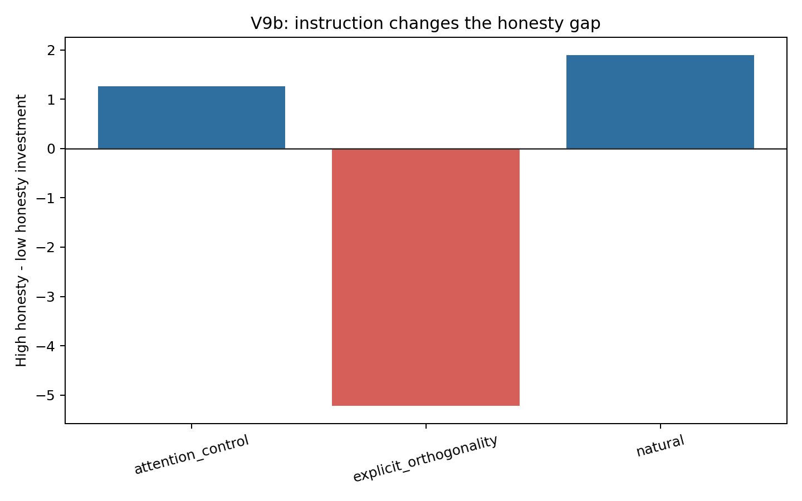

检验 explicit orthogonality 是中性规则说明，还是一种会改变任务表征的 causal cue。
natural high-low gap = 1.898。explicit_orthogonality high-low gap = -5.222。attention_control high-low gap = 1.268。结果支持 instruction-content explanation。 Attention-control 和 natural 都是正向 high-low gap，而 explicit orthogonality 是强反向 gap。这说明 V9 中 explicit condition 的反转不太可能只是因为“多了一段正式说明”或“prompt 更长”，更可能是因为“truth 与 return 无因果关系”这句话把模型推入了 causal-rule-following mode。
换句话说，explicit orthogonality 更像一种 causal / de-biasing cue，而不是中性的实验说明。它会改变模型如何表征任务，而不只是提供背景信息。

| instruction_type | high_investment | low_investment | high_minus_low | high_payoff | low_payoff | payoff_gap |
|---|---|---|---|---|---|---|
| attention_control | 3.333 | 2.065 | 1.268 | 12.769 | 11.667 | 1.102 |
| explicit_orthogonality | 2.889 | 8.111 | -5.222 | 12.463 | 16.694 | -4.231 |
| natural | 5.111 | 3.213 | 1.898 | 14.185 | 12.491 | 1.694 |
| instruction_type | honesty_level | n_runs | n_trials | mean_investment | mean_payoff |
|---|---|---|---|---|---|
| attention_control | high | 6 | 108 | 3.333 | 12.769 |
| attention_control | low | 6 | 108 | 2.065 | 11.667 |
| explicit_orthogonality | high | 6 | 108 | 2.889 | 12.463 |
| explicit_orthogonality | low | 6 | 108 | 8.111 | 16.694 |
| natural | high | 6 | 108 | 5.111 | 14.185 |
| natural | low | 6 | 108 | 3.213 | 12.491 |
investment ~ previous_payoff + trial + low_honesty * instruction_type，标准误按 run_id 聚类。
n=612, clusters=36, R2=0.6224
| term | coef | cluster_se | t | p_normal_approx |
|---|---|---|---|---|
| Intercept | 4.6465 | 0.2644 | 17.573 | 0.0 |
| previous_payoff_z | 2.2204 | 0.2444 | 9.086 | 0.0 |
| trial_z | 0.0795 | 0.1321 | 0.602 | 0.5473 |
| low_honesty | -0.8723 | 0.5379 | -1.622 | 0.1048 |
| explicit_orthogonality | -0.9407 | 0.4337 | -2.169 | 0.0301 |
| attention_control | -0.8663 | 0.7247 | -1.195 | 0.2319 |
| low_honesty × explicit_orthogonality | 3.409 | 0.7029 | 4.85 | 0.0 |
| low_honesty × attention_control | 0.2373 | 0.996 | 0.238 | 0.8116 |